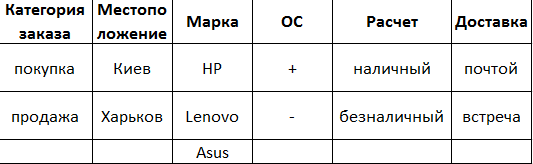
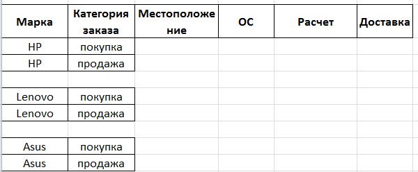
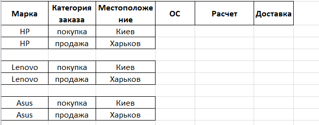
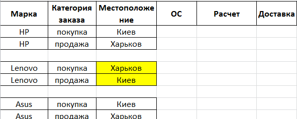
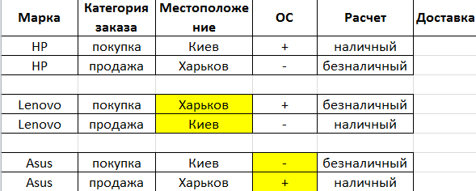

Pairwise testing — техника тест-дизайна, а именно метод обнаружения дефектов с использованием комбинационного метода из двух тестовых случаев. Он основан на наблюдениях о том, что большинство дефектов вызвано взаимодействием не более двух факторов (дефекты, которые возникают при взаимодействии трех и более факторов, как правило, менее критичны). Следовательно, выбирается пара двух тестовых параметров, и все возможные пары этих двух параметров отправляются в качестве входных параметров для тестирования. Pairwise testing сокращает общее количество тест-кейсов, тем самым уменьшая время и расходы, затраченные на тестирование. Техника известна уже больше 20 лет, но только последние 5 лет мы можем наблюдать ее активное использование.
Аll-pairs testing — комбинаторный метод тестирование программного обеспечения, который проверяет все возможные дискретные комбинации параметров для каждой пары входных параметров системы. Исходя из этого, мы получим меньшее число комбинаций, чем при использовании ортогональных матриц. Рассмотрим пример. Предположим, нам необходимо протестировать приложение для покупки/продажи б/у ноутбуков, мы имеем следующие переменные:
Если мы захотим протестировать все возможные комбинации, то мы должны составить 2 х 2 х 3 х 2 х 2 х 2 = 96 тест-кейса. Не многовато ли работы для тестирования формы?
Далее нам необходимо организовать переменные и значения.
Чтобы начать заполнять таблицу, необходимо организовать столбцы таким образом, чтобы первый имел наиболее большое количество переменных, а последний - наименее. Таким образом, первый столбец в нашей таблице — марка ноутбука. Первым делом записываем три значения Марки (т.к. это столбец с наибольшим числом значений) по два раза( два — это количество переменных следующего столбца, например, категория заказа). Это имеет такой вид:
Т.е. для каждого набора в столбце 1 мы помещаем оба значения столбца 2. То же самое мы повторяем с 3 столбцом.
У нас есть комбинация покупка&Киев и продажа&Харьков, но нету комбинации продажа&Киев и покупка&Харьков. Исправим это, поменяв местами значения во втором наборе третьего столбца.
Повторяем такие же манипуляции для колонок 4 и 5.
Колонка Доставка является более проблематичной, ведь нам не хватает комбинаций на покупка&встреча и продажа&почтой чтобы не нарушать отсортированные данные, нужно ввести еще 2 тестовых случая для этих комбинаций. Значком тильды “~” мы маркируем переменные, которые выступают произвольными. Таким образом мы получаем следующую таблицу.

Таким образом, мы получили готовые 8 тест-кейсов вместо 96.
Существует ряд ПО, которые помогут вам не только качественно, но и быстро создать тест-кейсы из большого количества параметров, самые популярные из них:
Суммируя все вышесказанное, pairwise testing — прекрасный метод для повышения эффективности написания тест-кейсов. Он значительно сокращает количество комбинаций, которые будут покрыты, но остается очень хорошим с точки зрения обнаружения неисправностей. Метод очень прост в использовании, для его эксплуатации достаточно лишь определиться с функционалом для проверки, исследовать выбранный сценарий и его параметры и применить алгоритм, который определит оптимальное число тестов с полным перебором пар.